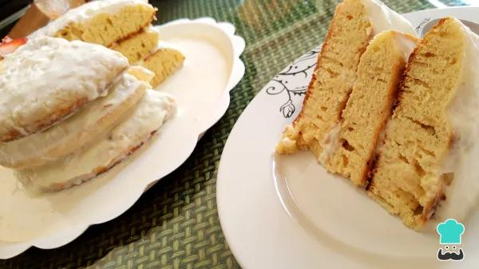
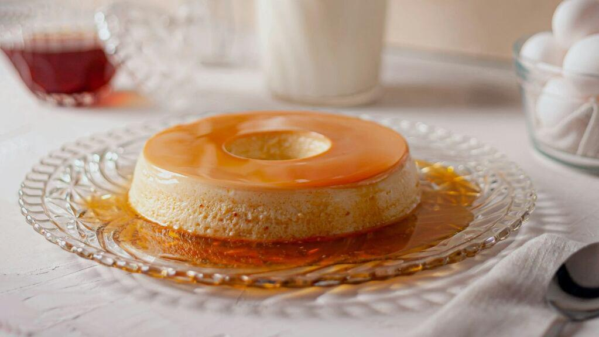
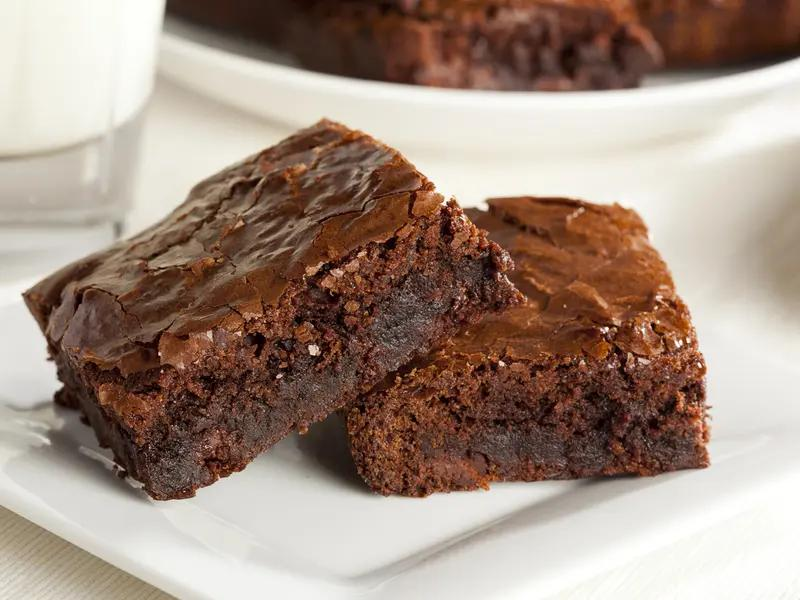

Pasos
- Batí las yemas con el azúcar hasta que quede una mezcla clara y espesa.
- Agregá el mascarpone y mezclá hasta integrar.
- Batí las dos claras a punto nieve.
- Incorporalas suavemente a la mezcla anterior (movimientos envolventes).
- Mojá rápidamente las vainillas en el café frío (no las dejes mucho tiempo).
- Colocá una capa en una fuente.
- Cubrí con una capa de crema.
- Repetí capas hasta terminar (crema arriba).
- Espolvoreá con cacao amargo.
- Llevá a la heladera mínimo 4 a 6 horas, ideal toda la noche.
Tota Tres Leches

Pasos
- Batí los huevos con el azúcar hasta que estén bien espumosos.
- Agregá la vainilla.
- Incorporá la harina con movimientos suaves.
- Horneá a 180°C por unos 25 a 30 minutos.
- Dejá enfriar.
- Mezclá la leche condensada + evaporada + crema.
- Pinchá el bizcochuelo con un tenedor.
- Verté la mezcla de leches de a poco hasta que se absorba bien.
- Cubrí con crema batida.
- Podés espolvorear canela o decorar con frutas.
Flan casero con dulce de leche

Pasos
- Hacer caramelo con azúcar en una flanera y cubrir el molde.
- Batir huevos + azúcar + vainilla.
- Agregar la leche y mezclar bien.
- Verter en el molde caramelizado.
- Cocinar a baño María en horno (180°C) por 45 a 60 min.
- Enfriar y desmoldar.
- Servir con dulce de leche por encima.
Brownie de chocolate

Pasos
- Derretir chocolate y manteca.
- Agregar azúcar y mezclar.
- Incorporar huevos de a uno.
- Añadir harina y sal.
- (Opcional) sumar nueces.
- Hornear a 180°C por 20 a 25 min.
- Dejar enfriar antes de cortar.
- Servir con helado o crema batida.